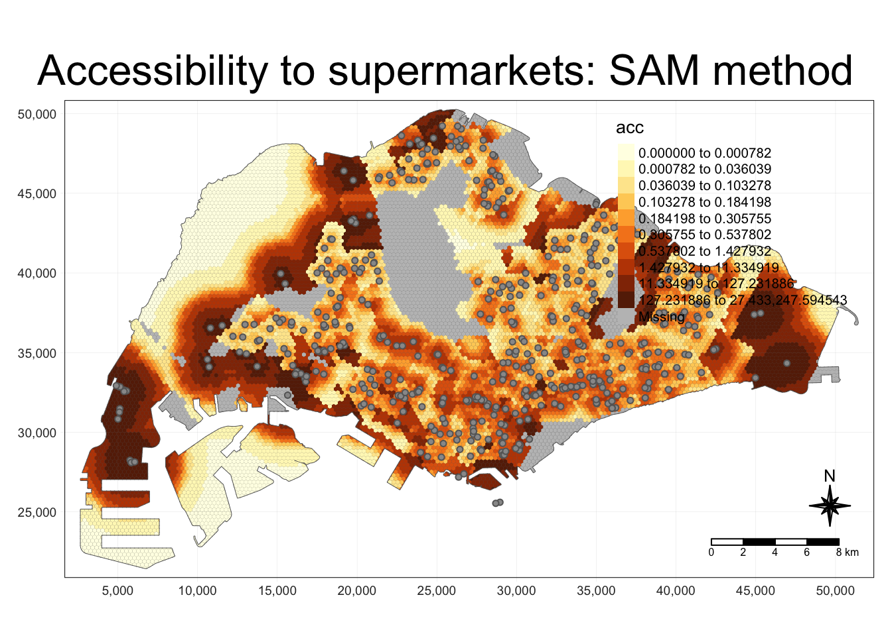

pacman::p_load(tmap, SpatialAcc, sf,
ggstatsplot, reshape2,
tidyverse, dplyr, hash)name2file <- new.env(hash=T, parent=emptyenv())
name2file[["markets and food centres"]] <- "markets_and_food_centres.rds"
name2file[["mrt"]] <- "mrt.rds"
name2file[["atm"]] <- "poi_atm.rds"
name2file[["bank"]] <- "poi_bank.rds"
name2file[["beauty salon"]] <- "poi_beauty_salon.rds"
name2file[["cafe"]] <- "poi_cafe.rds"
name2file[["clothing store"]] <- "poi_clothing_store.rds"
name2file[["convenience"]] <- "poi_convenience_store.rds"
name2file[["dentist"]] <- "poi_dentist.rds"
name2file[["doctor"]] <- "poi_doctor.rds"
name2file[["gym"]] <- "poi_gym.rds"
name2file[["hospital"]] <- "poi_hospital.rds"
name2file[["library"]] <- "poi_library.rds"
name2file[["lodging"]] <- "poi_lodging.rds"
name2file[["night club"]] <- "poi_night_club.rds"
name2file[["pow"]] <- "poi_place_of_worship.rds"
name2file[["restaurant"]] <- "poi_restaurant.rds"
name2file[["school"]] <- "poi_school.rds"
name2file[["tourist"]] <- "poi_tourist_attraction.rds"
name2file[["supermarkets"]] <- "supermarkets.rds"
name2file[["bus"]] <- "osm_sg.rds"plot_acc <- function(method, quantiles, grid_size, point_type, exponent, subz) {
grid <- read_rds(paste('../data/rds/grid_', grid_size, '_hexagon', ifelse(subz, '_sz', '_pa'),'.rds', sep=""))
print(grid)
# points <- read_rds(paste('../data/rds/', name2file[[point_type]], sep="")) %>%
# mutate(TOTAL_STALLS = as.numeric(TOTAL_STALLS)) %>%
# mutate(capacity = (TOTAL_STALLS * 25))
points <- read_rds(paste('../data/rds/', name2file[[point_type]], sep="")) %>%
mutate(capacity = 500)
centroid.coords <- st_coordinates(st_centroid(grid))
points.coords <- st_coordinates(points)
dm <- exp(distance(centroid.coords, points.coords, type = "euclidean") / 1000 * exponent)
acc_Hansen <- data.frame(ac(grid$demand,
points$capacity,
dm,
d0 = 250,
power = 2,
family = method))
colnames(acc_Hansen) <- "acc"
hexagon_Hansen <- bind_cols(grid, as_tibble(acc_Hansen))
hexagon_Hansen$acc[is.infinite(hexagon_Hansen$acc)] <- NA
mapex <- st_bbox(grid)
tm_shape(grid) +
tm_polygons() +
tm_shape(hexagon_Hansen,
bbox = mapex) +
tm_fill(col = "acc",
n = quantiles,
style = "quantile",
border.col = "black",
border.lwd = 1,
na.rm = TRUE) +
tm_shape(points) +
tm_symbols(size = 0.1) +
tm_layout(main.title = paste("Accessibility to ", point_type, ": ", method," method", sep=""),
main.title.position = "center",
main.title.size = 2,
legend.outside = FALSE,
legend.height = 0.45,
legend.width = 3.0,
legend.format = list(digits = 6),
legend.position = c("right", "top"),
frame = TRUE) +
tm_compass(type="8star", size = 2) +
tm_scale_bar(width = 0.15) +
tm_grid(lwd = 0.1, alpha = 0.5)
}1: “SAM”, “KD2SFCA”, “Hansen” : enum 2: Quantiles : int
# plot_acc("SAM", 10, 250, "markets and food centres", 2, TRUE)
plot_acc("SAM", 10, 250, "supermarkets", 2, TRUE)Simple feature collection with 13524 features and 2 fields
Geometry type: GEOMETRY
Dimension: XY
Bounding box: xmin: 2667.537 ymin: 21448.48 xmax: 51404.13 ymax: 50256.33
Projected CRS: SVY21 / Singapore TM
First 10 features:
demand ID geometry
1 7.285290e-03 1 POLYGON ((2792.537 22819.68...
2 9.664483e-03 2 POLYGON ((2792.537 23252.7,...
3 9.689683e-03 3 POLYGON ((2792.537 23685.71...
4 9.714610e-03 4 POLYGON ((2792.537 24118.72...
5 9.740417e-03 5 POLYGON ((2792.537 24551.74...
6 9.762412e-03 6 POLYGON ((2792.537 24984.75...
7 4.203813e-03 7 POLYGON ((2792.537 27005.47...
8 2.666514e-05 8 POLYGON ((2792.537 27467.15...
9 8.051000e-03 9 POLYGON ((2792.537 22675.35...
10 1.947536e-02 10 POLYGON ((2668.681 22891.19...Warning: st_centroid assumes attributes are constant over geometries
# plot_acc("SAM", 10, 500)
# plot_acc("SAM", 10, 750)
# plot_acc("SAM", 10, 1000)
# plot_acc("KD2SFCA")
# plot_acc("Hansen")# plot_acc("SAM", 10, 250, "markets and food centres", 2, TRUE)
# plot_acc("SAM", 10, 250, "mrt", 1.5)
# plot_acc("SAM", 10, 250, "atm")
# plot_acc("SAM", 10, 250, "bank")
# plot_acc("SAM", 10, 250, "beauty salon")
# plot_acc("SAM", 10, 250, "cafe")
# plot_acc("SAM", 10, 250, "clothing store")
# plot_acc("SAM", 10, 250, "convenience")
# plot_acc("SAM", 10, 250, "dentist")
# plot_acc("SAM", 10, 250, "doctor")
# plot_acc("SAM", 10, 250, "gym")
# plot_acc("SAM", 10, 250, "hospital")
# plot_acc("SAM", 10, 250, "library")
# plot_acc("SAM", 10, 250, "lodging")
# plot_acc("SAM", 10, 250, "night club")
# plot_acc("SAM", 10, 250, "pow")
# plot_acc("SAM", 10, 250, "restaurant")
# plot_acc("SAM", 10, 250, "school")
# plot_acc("SAM", 10, 250, "tourist")
# plot_acc("SAM", 10, 250, "supermarkets")
# plot_acc("SAM", 10, 250, "bus")